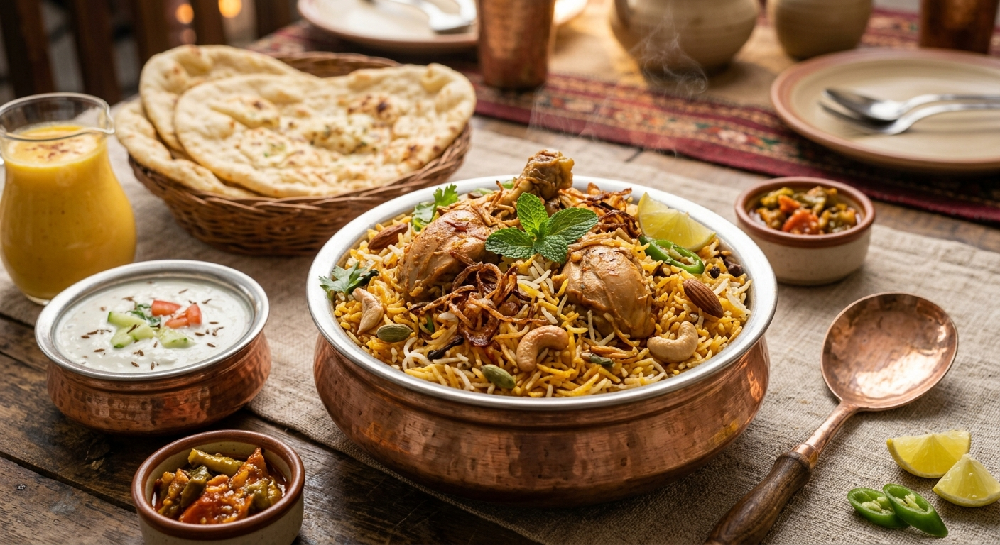

Chicken Biryani
Home

A fragrant and colorful serving of layered chicken biryani with basmati rice
Chicken biryani is a celebrated mixed rice dish originating from the South Asian subcontinent.
It is made with fragrant basmati rice, tender chicken, and a complex blend of spices.
Unlike a simple pulao, biryani is typically prepared by layering partially cooked rice and
a rich chicken curry, then cooking them together on low heat (a method called dum) to infuse
the rice with the meat's flavors. The dish is known for its vibrant colors from saffron and
fried onions, and its aromatic scent from whole spices like cardamom, cloves, and bay leaves.
Ingredients
- Basmati rice
- Chicken (bone-in pieces)
- Yoghurt
- Fried onions (birista)
- Ginger-garlic paste
- Tomatoes
- Green chilies
- Red chili powder
- Turmeric powder
- Garam masala
- Whole spices (bay leaf, cardamom, cloves, cinnamon)
- Saffron milk
- Ghee
- Mint and cilantro
- Salt
Steps
- Marinate the chicken with yoghurt, ginger-garlic paste, red chili powder, turmeric, garam masala, salt, and half of the fried onions. Let it rest for at least 30 minutes.
- Soak the basmati rice for 30 minutes. In a large pot, boil water with whole spices and salt. Add the soaked rice and cook until it is 70% done. Drain and set aside.
- In a heavy-bottomed pot, heat ghee and cook the marinated chicken until it is tender and the oil separates. Stir in tomatoes and green chilies and cook until they soften.
- Layer the partially cooked rice over the chicken. Top with mint, cilantro, remaining fried onions, and drizzle with saffron milk and ghee.
- Cover the pot tightly with a lid and cook on the lowest possible heat for 20-25 minutes (dum). Gently fluff the rice and chicken together before serving.